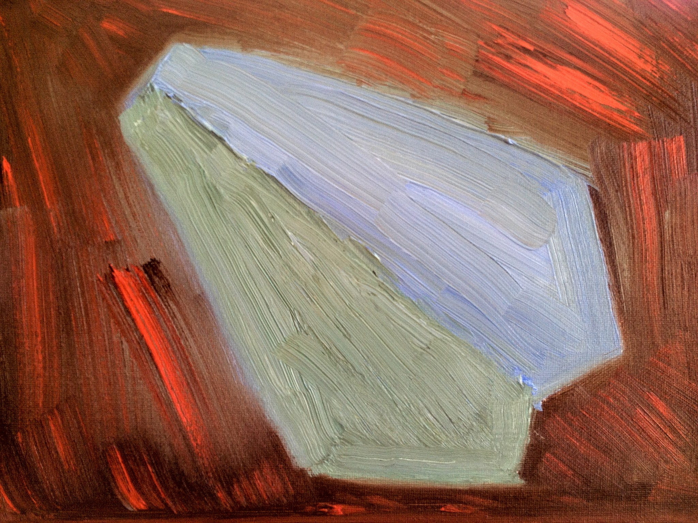

Adam
Jan 28, 2012
Adam
Jan 28, 2012
Who am I
XMLHttpRequest connect() {
var _xmlHttpRequest = new XMLHttpRequest();
_xmlHttpRequest.on.error.add((var event) {
_print('on error: '+event);
});
_xmlHttpRequest.on.abort.add((var event) {
_print('on abort: '+event);
});
return _xmlHttpRequest;
}
// Basic http methods
getHttp(var uri) {
XMLHttpRequest c = connect();
c.open('GET', uri, false);
c.setRequestHeader('Accept', 'application/json');
c.send();
return c.responseText;
}
